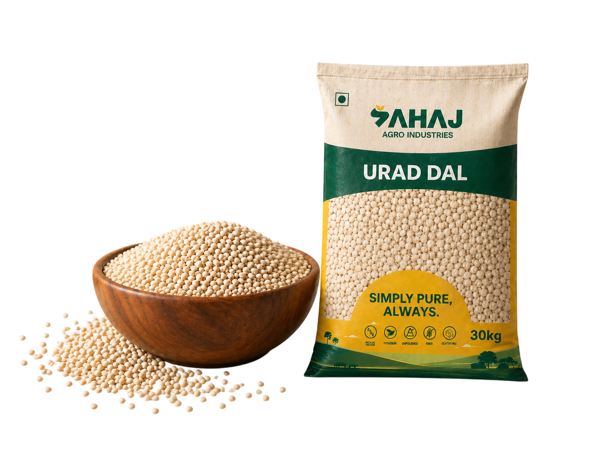

Urad Dal Papad
Crunchy Indian WaferA thin, crisp, disc-shaped Indian accompaniment made from seasoned urad dal flour, typically roasted or fried to crispy perfection.
About Urad Dal Papad
Urad Dal Papad is an essential accompaniment in Indian cuisine known for its satisfying crunch and peppery flavor. Prepared from a stiff dough of urad dal flour and spices, it is sun-dried and enjoyed roasted, fried, or microwaved.
Cuisine
Indian
Serves
4–6 People
Cooking Time
5 Minutes
(excluding drying time)
Ingredients
- 2 cups urad dal flour
- 1 tsp black pepper (crushed)
- 1/2 tsp cumin seeds
- 1/4 tsp asafoetida (hing)
- 1 tsp papad khar (or baking soda)
- 2 tbsp oil
- Salt to taste
- Water (as needed for dough)
Preparation
-
1
Mix
Combine flour, salt, spices, and papad khar.
-
2
Knead
Knead into a very stiff dough using warm water.
-
3
Pound
Pound the dough well using a pestle to make it pliable.
-
4
Portion
Divide the dough into small, equal-sized balls.
-
5
Roll
Roll out each ball into very thin, translucent discs.
-
6
Dry
Sun-dry the discs for a few days until completely crisp.
-
7
Cook
Roast on an open flame or deep fry before serving.
Pro Tip
Pounding the dough is the secret to getting exceptionally thin and even papads. Spend at least 15 minutes pounding the dough with oil to activate the proteins, making it elastic and easy to roll. Ensure they are dried thoroughly in bright sunlight to prevent any fungal growth and to extend their shelf life for months in an airtight container.

You May Also Like


Looking to Import Urad Dal for Your Business?
We supply premium quality urad dal in bulk with global export standards.
REQUEST A BULK QUOTE →